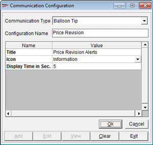

The Communication Configuration window is as shown.

Communication Type: Balloon Tip is selected, based on the selection on the previous window
Configuration Name: Enter the name for the balloon tip alert configuration
The grid displays the properties to be set to use balloon tips for alerts. The properties are listed under Names and the specified values under Value
Title: Enter a title for the balloon tip
Icon: Select the type of icon to be displayed in the balloon tip. The icons available are Information, Warning and Error
Display Time in Sec.: Enter the duration (in seconds) of display of balloon tip at the terminal.
Active: Select to make the communication type active.
Test Connection: Click to check the connectivity.
Note: Here you cannot add or view any other communication configuration.